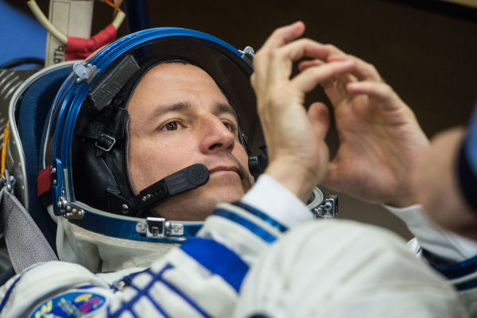
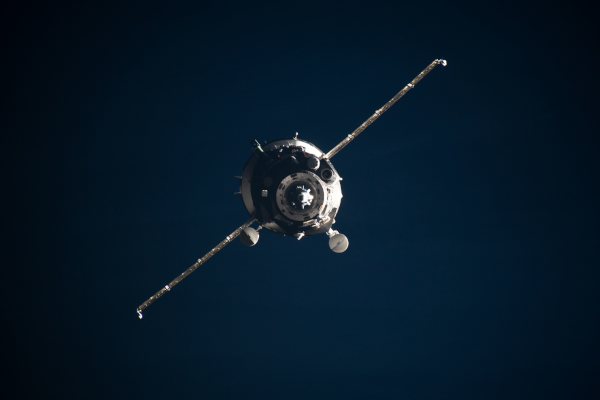

Los viajes científicos de los astronautas de la NASA Jessica Meir y Andrew Morgan a bordo de la Estación Espacial
On April 17, NASA astronauts Andrew Morgan and Jessica Meir wrap up their stay aboard the International Space Station. They return to Earth along with their Russian colleague, cosmonaut Oleg Skripochka.
During Morgan’s 272 days and Meir’s 205 days in space, the pair contributed to hundreds of scientific experiments aboard the orbiting laboratory. Before they come home, let us look back at their research-filled stay in microgravity.
July 20, 2019: The journey begins
Morgan launched on the Soyuz MS-13 crew ship along with Luca Parmitano of ESA (European Space Agency) and Alexander Skvortsov of Roscosmos to the station on the 50th anniversary of NASA’s first landing on the Moon.


Aunque el capítulo de investigación de Morgan y Meir a bordo del laboratorio en órbita termina con su regreso a la Tierra el 17 de abril, su participación en la investigación en humanos continúa mientras los científicos monitorean la aclimatación de sus cuerpos a la gravedad durante meses, o incluso años, después de su aterrizaje. La ciencia a bordo de la estación espacial también continúa. Se están llevando a cabo investigaciones innovadoras que buscan beneficiar a los humanos en la Tierra y seguir explorando el sistema solar. Siga @ISS_Research para mantenerse al día con la ciencia que sucede a bordo de su laboratorio en órbita.
Erin Winick
International Space Station Program Research Office
Johnson Space Center
Last Updated: April 14, 2020
Editor: Michael Johnson